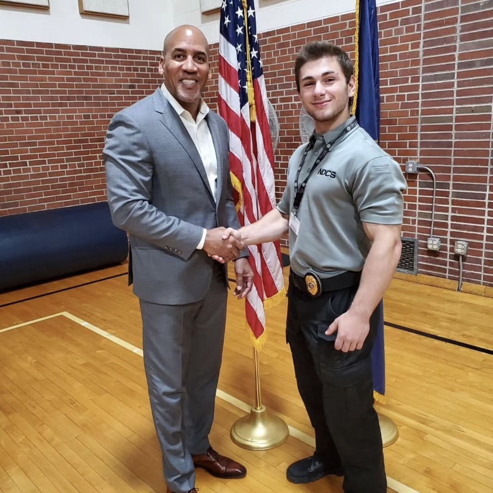
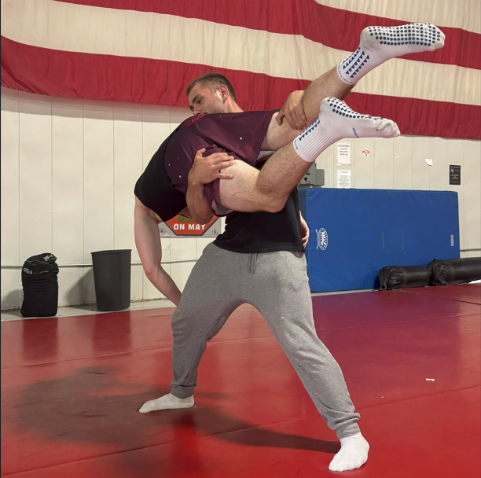
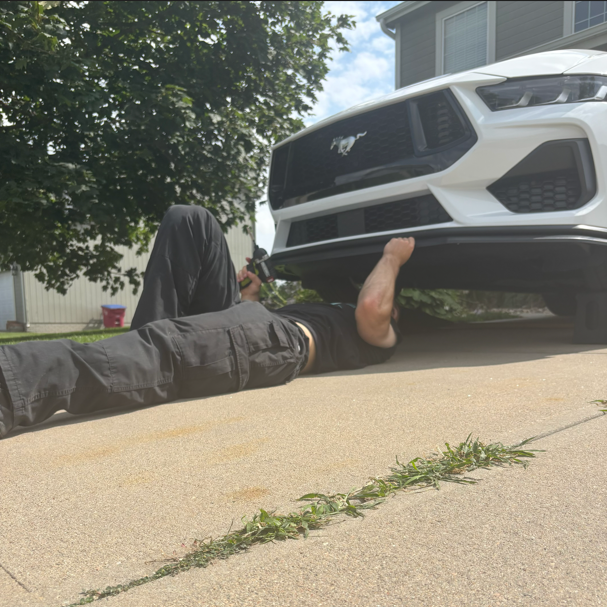
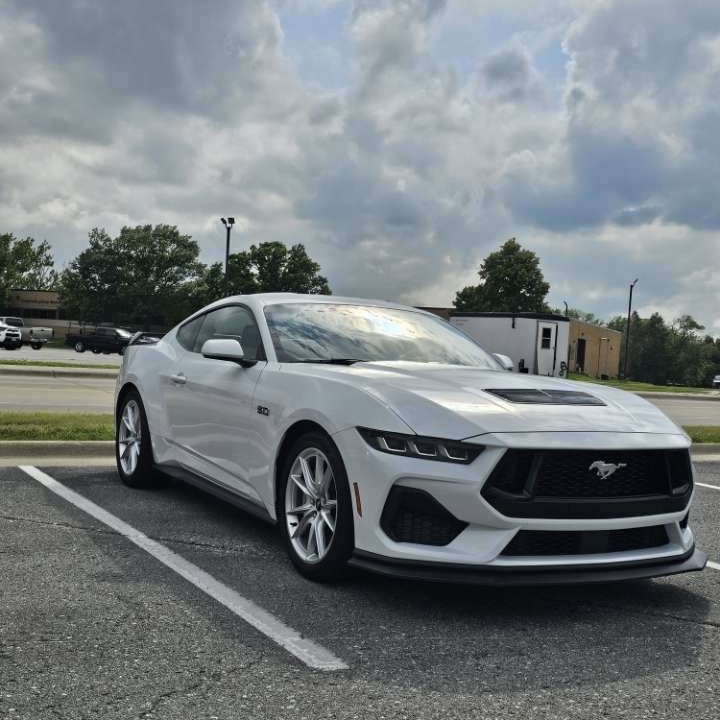
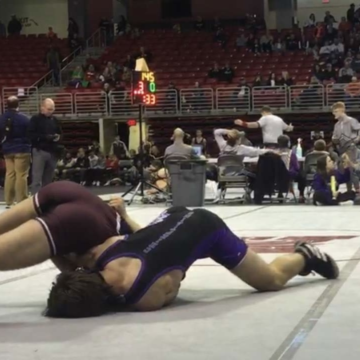
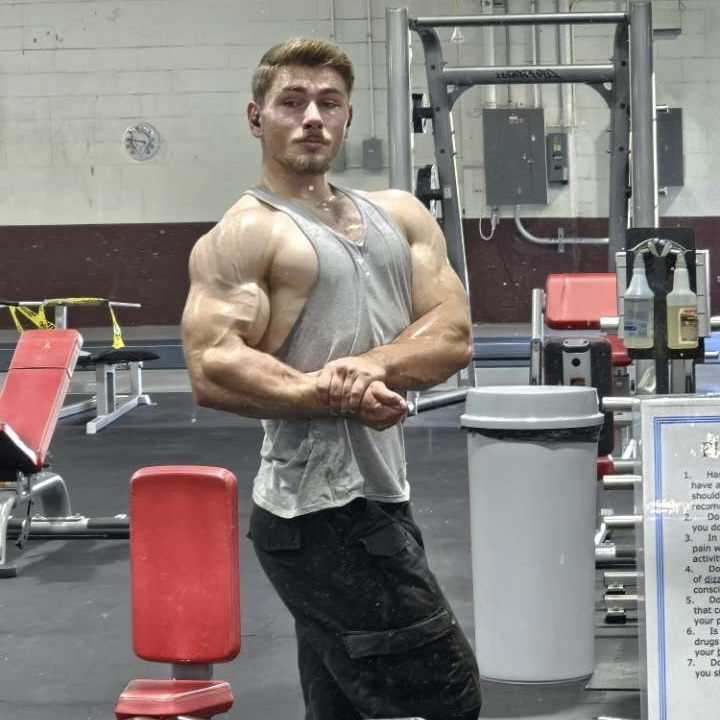

Hobbies and Achievements

Hobbies
Achievements

A photo of the director of training and myself.

A photo of a self-defense technique I teach.

This is when I added the lip to my mustang, it was a cosmetic addition.

My Mustang, a 2025 v8. So far I've added a new spoiler and lip.
In the future, I'd like to add a stripe and black out the back.

This is from a match I won back in high school.

This is a photo of the physique I've worked hard to achieve.